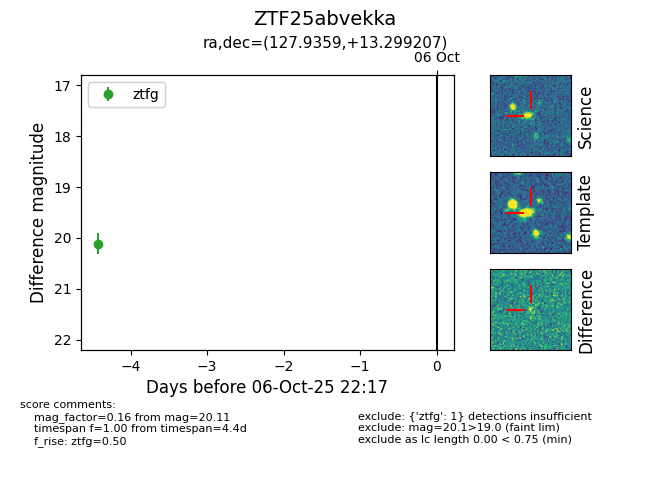

FINK: ZTF25abvekka
Lasair: ZTF25abvekka
ALeRCE: ZTF25abvekka
ZTF25abvekka (ztf,fink)
equatorial (ra, dec) = (127.9359,+13.29921)
galactic (l, b) = (211.8495,+28.16278)

last ztfg=20.11
1 ztfg detections